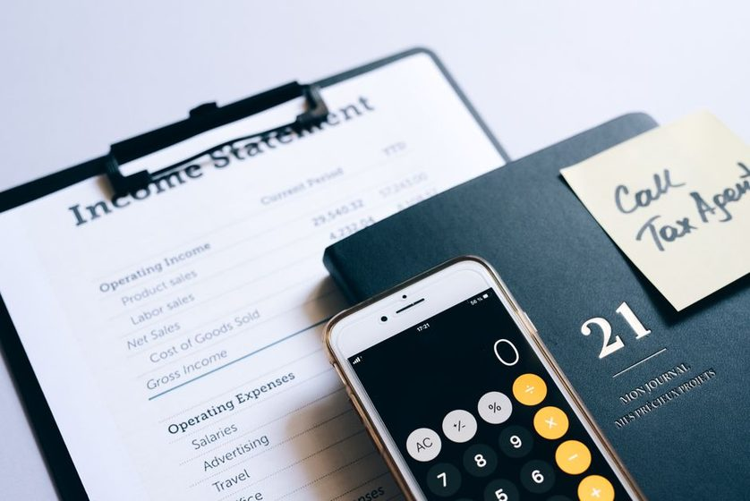

Imposto de Renda 2026 sem estresse: organize os documentos com calma
Um checklist tranquilo de documentos e hábitos para não deixar a declaração para a última hora — e chegar na entrega com a cabeça leve.

Poucos assuntos financeiros geram tanto frio na barriga quanto o Imposto de Renda. E, na maioria das vezes, o problema não é a declaração em si — é a correria de reunir tudo às pressas, num fim de semana, com o prazo batendo na porta. A boa notícia é que quase todo esse estresse desaparece quando você troca a maratona de última hora por um pouco de organização feita com antecedência.
Neste guia, a ideia não é ensinar você a preencher cada campo do programa da Receita — isso muda de ano para ano e cada situação tem suas particularidades. O foco aqui é mais gentil: como juntar os documentos com calma, montar uma pasta organizada e criar hábitos simples para que, quando o período de entrega abrir, você já esteja praticamente pronto.
Declarar não precisa ser um evento de pânico anual. Quando os documentos estão reunidos ao longo do ano, o preenchimento vira uma tarefa de uma tarde — não de uma semana perdida de noites mal dormidas.
Por que se organizar cedo faz tanta diferença
O período de entrega da declaração costuma abrir por volta de março e seguir até algum momento por volta do fim de maio ou início de junho. Como as datas exatas mudam a cada ano e são definidas pela Receita Federal, o ideal é sempre confirmar o calendário oficial — mas você não precisa esperar o anúncio para começar a se preparar.
Quem deixa tudo para os últimos dias enfrenta três problemas clássicos:
- Documentos que não chegaram: informes de bancos, corretoras e empregadores têm seu próprio calendário de disponibilização. Correr atrás deles na véspera é receita de frustração.
- Erros de digitação e omissões: pressa é a maior amiga da malha fina. Um valor trocado ou um informe esquecido pode travar a sua declaração.
- Ansiedade desnecessária: a sensação de estar atrasado pesa mais do que a tarefa em si.
Organizar-se cedo é, no fundo, um cuidado com a sua tranquilidade — o mesmo princípio que defendemos ao falar de reserva de emergência e de orçamento sem culpa: antecipar decisões para não decidir no susto.
Os tipos de documentos que você vai reunir
De forma geral, os papéis (hoje quase todos digitais) se encaixam em quatro grandes grupos. Não precisa ter todos — depende do seu caso —, mas conhecer as categorias ajuda a não esquecer nada.
| Categoria | Exemplos comuns | Onde costuma vir |
|---|---|---|
| Rendimentos | Informe de rendimentos do salário, aposentadoria, pró-labore, aluguéis recebidos | Empregador, INSS, imobiliária, fonte pagadora |
| Bancos e investimentos | Informe de rendimentos financeiros, saldos de contas, aplicações, ações e fundos | Banco, corretora, app de investimentos |
| Despesas dedutíveis | Recibos de saúde, comprovantes de educação, previdência privada, pensão | Clínicas, escolas, planos, recibos próprios |
| Bens e dívidas | Documentos de imóveis, veículos, financiamentos e empréstimos em aberto | Cartório, contratos, extratos |
Um detalhe que costuma passar despercebido: com o avanço do Open Finance, muitas instituições facilitaram o acesso aos informes de forma centralizada. Ainda assim, vale conferir cada fonte individualmente — nem tudo aparece automaticamente no programa pré-preenchido.
Checklist tranquilo: monte sua pasta em etapas
Em vez de encarar tudo de uma vez, distribua a coleta em pequenas etapas ao longo de algumas semanas. Marque no calendário, faça um item por dia se preferir. A lógica é a mesma de guardar dinheiro aos poucos: constância vence intensidade.
- Crie a pasta digital. No celular ou no computador, faça uma pasta chamada, por exemplo, "IR 2026". Dentro dela, subpastas por categoria (Rendimentos, Bancos, Saúde, Bens).
- Baixe os informes de rendimento. Salve o do trabalho e o de cada banco/corretora assim que ficarem disponíveis.
- Reúna os comprovantes de despesas dedutíveis. Guarde recibos de saúde e educação ao longo do ano — não só em abril.
- Liste seus bens e dívidas. Anote o que você possui e o que ainda deve, com os valores conforme os documentos.
- Confira dados básicos. Nome, CPF, conta bancária para eventual restituição — pequenos erros aqui atrasam tudo.
- Revise com calma antes de enviar. Compare os valores do programa pré-preenchido com os seus documentos, campo por campo.
Dica de organização contínua
Crie a pasta "IR" logo no começo do ano e, sempre que um recibo importante aparecer, jogue lá na hora. No período de entrega, você só abre a pasta — em vez de começar do zero.
Erros comuns que costumam levar à malha fina
A malha fina é, de forma simplificada, quando a Receita encontra inconsistências entre o que você declarou e as informações que ela já tem de outras fontes. A maioria dos casos não é fraude — é distração. Os mais frequentes costumam ser:
- Omitir um rendimento: esquecer um informe de um segundo emprego, de um banco antigo ou de rendimentos de aplicações.
- Valores divergentes: digitar um número diferente do que consta no informe oficial.
- Despesas médicas sem comprovação: lançar deduções sem recibo que as sustente.
- Dependentes declarados por duas pessoas: um mesmo dependente informado em duas declarações diferentes.
- Bens sem atualização: deixar de registrar a compra ou venda de um bem no ano.
Repare que quase todos esses erros nascem da pressa. Com os documentos reunidos com antecedência, o cruzamento fica fácil — você simplesmente confere se cada valor bate com o papel correspondente.
Revisar com calma vale por dois
Depois de preencher, resista à tentação de enviar na mesma hora. Deixe a declaração "descansar" um dia e volte a ela com olhos frescos. Uma boa revisão tranquila costuma pegar exatamente aqueles pequenos deslizes que a mente cansada não vê. Alguns pontos para checar:
- Todos os informes de rendimento foram lançados?
- Os valores de saúde e educação têm recibo guardado na pasta?
- Os dados bancários para restituição estão corretos?
- Seus bens e dívidas refletem a realidade do ano?
Organize suas finanças o ano inteiro, não só em abril
O app Bússola Leve ajuda você a acompanhar gastos e guardar comprovantes ao longo do ano — para que a temporada do IR seja só mais uma tarefa tranquila.
Conhecer o Bússola LeveQuando procurar um profissional
Para muitas pessoas com uma única fonte de renda e poucas deduções, a declaração é simples e o próprio programa pré-preenchido resolve boa parte. Mas há situações em que vale contratar um contador ou especialista, sem culpa nenhuma:
- Você teve rendimentos de várias fontes, no Brasil ou no exterior.
- Comprou ou vendeu imóveis, veículos ou fez operações na bolsa.
- Tem empresa, atua como autônomo com estrutura mais complexa ou recebe aluguéis.
- Ficou em malha fina em anos anteriores e quer resolver com segurança.
Pagar por orientação qualificada em casos complexos não é gasto — é proteção. Um erro numa declaração mais elaborada pode custar bem mais caro do que o honorário de um bom profissional.
Conclusão: a calma começa antes do prazo
O Imposto de Renda deixa de ser um monstro quando você para de encará-lo como um evento único e passa a tratá-lo como um hábito de organização espalhado pelo ano. Uma pasta digital, alguns minutos de atenção quando os informes chegam e uma revisão sem pressa — é isso que separa a declaração serena da correria angustiante.
Comece hoje, mesmo que falte tempo para o período de entrega abrir. Crie a pasta, salve o primeiro documento e siga adiante um passo de cada vez. Sua versão de abril ou maio vai agradecer. E se quiser continuar organizando a vida financeira com leveza, dê uma olhada nos nossos guias de orçamento adaptado à realidade brasileira e de reserva de emergência.
Aviso: este conteúdo é educativo e informativo, não constitui consultoria fiscal, contábil ou jurídica individual. Regras, prazos e valores do Imposto de Renda são definidos pela Receita Federal e podem mudar a cada ano — confirme sempre as informações oficiais. Para casos específicos ou mais complexos, procure um contador ou profissional habilitado.